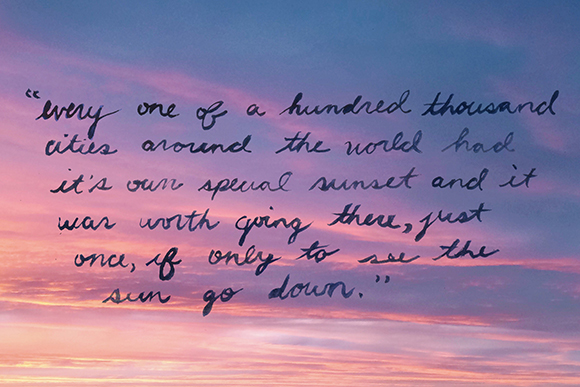

The Beauty of A Sunset

Why is it that when our eyes fix onto the warm colors of the setting sun we’re transported to an enchanted world? Most people can agree that a good sunset holds the power to stop just about anyone in their tracks — studies have even shown that instances of awe in watching sunsets cause psychological effects that enhance long-lasting satisfaction in life. If that’s not reason enough to stop and appreciate the setting sun, I don’t know what is.
For all you hopeless romantics out there like myself, the real reason why we glorify these instances of beauty is because they are simply that… idealized romance. Sundown seems to embody the sheer power of an utterly romantic point in time. Just like love at first sight, it takes your breath away, leaves you speechless and if only for a moment, slows down time. In that instant, you feel the love and gratitude for Mother Nature exude from every inch of your body. A sunset possesses the promise of a new day. With the sun’s last rays peeking out from the horizon comes the realization that tomorrow holds endless possibilities. You know it won’t last, but you savor every last bit of that fleeting beauty.
Recently I’ve come to realize that I collect sunsets. Whether it’s walking to my car at the end of the workday or strolling the sands of an exotic beach, without even noticing it, I’ve managed to use a camera lens to take these evenings home with me. This collection of cotton candy clouds and radiating hues represents some of the most beautiful moments and most wonderful memories in my life. These snapshots have become sacred treasures in my heart.
(Original)
Enigmatic beauty of Sunset at Marine Drive
There is something magical about sunset that attracts me to the core. Maybe it reminds me of my childhood memories where the sight of sunset rays, falling over the eastern hills of our village, usually indicated the time my father would return from his tours and brought us biscuits and candies. Maybe it reminded me of sunsets in childhood that signalled us the time to stop playing and head back home. But then we hated the fact that the Sun would set as even a child knows darkness follows sunsets.
While thinking it has to be something more than these memories that makes me fall in love with sunset views, I remember the fact that any association we had with anything in our childhood be it good or bad then becomes a memory, the remembrance of which is just mesmerizing. For instance, remembering the person with whom you had frequent quarrels and fights will not necessarily anger you but could make you smile if not longer the person. But I am not sure what exactly could be the reason for my fascination with sunset in #MarineDrive.
Like a sun that has completed its day of being sunny, is my love for sunset subconsciously connected to my missing of someone very dear to me who has had his moments on this earth and is resting in peace up above over the vales and hills? If that be the reason, I’d rather point my lens more to sunrise views. But I am reminded of the fact that the Sun never really sets. It is the earth that moves, only to face the sun again the next day. Is it then this symbolism of hoping for something bright even as darkness is eminent be the reason?
Or is it the location? Could it be that Marine Drive possesses some unique quality, the beauty of which is so great that it left a huge impact on my psyche? To be precise, how important could a physical location be in witnessing the beauty of a natural phenomenon as normal as the sunset. The reason I do not know. I also do accept the possibility that maybe I know the reason very well but didn’t realise. Be that as it may, gazing the rhapsodic scene of sunset in Marine Drive is an affair I had for the past two years and it is just blissful, to say the least.
(Original)
Chasing the Sunrise
It’s been a while I was silent and the reasons do not include laziness. Sometimes it happens when all the stressful situations appear in one moment – I had a lot of work recently (still have though), this moving into new apartment thing (I am very happy, but it is exhausting), not eating well and many other smaller little things I had to deal with. Finally I found an hour of tranquility and just started to write.
Remember when I came to Barcelona I had to work a lot, study and party from time to time, but at some point I created a habit of meeting a sunrise once a week, allocating some time usually on Sundays. I would wake up early in the morning, take my bicycle, put the music on and go to the beach to see how the day begins, to observe how slowly sun is rising and the light fills the city, how the darkness becomes weaker and everything wakes up. Some people would already make their morning run routine, some would meditate on the beach, and all this – in complete silence, only the sound of waves breaking against the sand and seagulls shouting from time to time from different sides.
It was a perfect beginning of the day, as it was giving me the feeling of fulfillment, of energy flowing through my body and it was just beginning of the day – so many things can be done! Without knowing that, I was meditating those days – not thinking about anything, just observing my surroundings. And it was so beautiful….
Then I moved to another apartment, which was much further from the sea, I started a new job, then another one remotely (some difficult times) and I left my weekly routine. Then I moved even further, to the mountains, and there, even in summer it was much harder to get my ass up and go to the beach. And I am not talking about doing it in the morning.
I forgot about the beauty of this magnificent moment. Some people pay a lot of money to get to the sea and when they have this chance they do not waste it. They meet all sunrises and sunsets possible. I am lucky enough to leave in the city by the sea, but with work and all other routines sometimes I forget how incredible it is.
Now I don’t have any excuses for not watching sun rising. I live very close to the sea, I don’t even need a bike to get there. Today I experienced again all these amazing feelings from the first year, I saw the sun rays changing from red to yellow, I saw this beautiful sky, I was calmer than boa, it was fascinating and now I want to do it more. Now I want to wake up earlier despite the cold, despite the chaos on my head, despite being tired. Because I have an amazing opportunity and I don’t want to miss it.
Sometimes we forget about beautiful things we have around us, we stop noticing them, we start to complain, we want to go to another place (yes, here I am a sinner). I understand that not everyone is living in such beautiful city as Barcelona, but anyway something nice and lovely can be found everywhere, just needs more effort. I truly believe in a statement: “There is always a solution”, if you are looking for something you will find it. It has always been like this and will always be. You just have to be sure what you are looking for and do not give up after first failure.
I don’t know if waking up before the sun and observing its’ rising has some benefits for health or mind and so on, so I won’t write here 10 cool and useful reasons to do so. The only thing I know – it is incredibly gorgeous and it gives you a moment of tranquility. If you like this combination and have a possibility, definitely worth trying.
(Original)